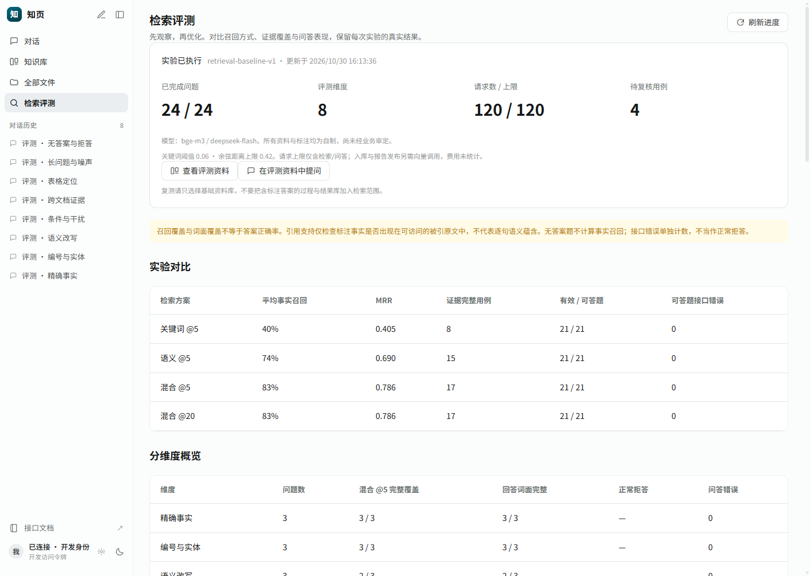
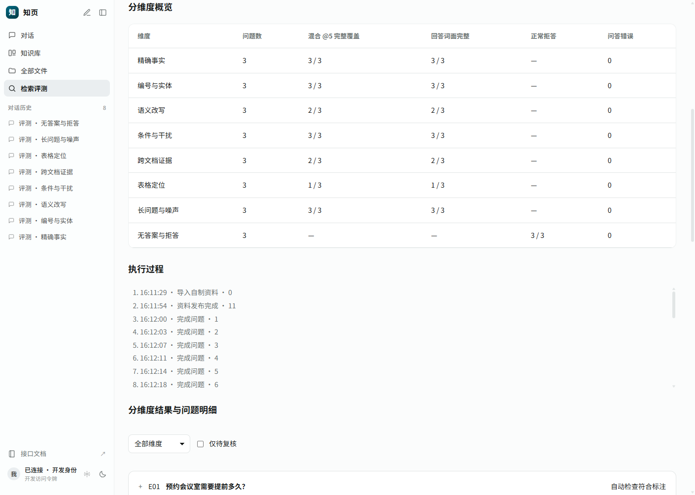
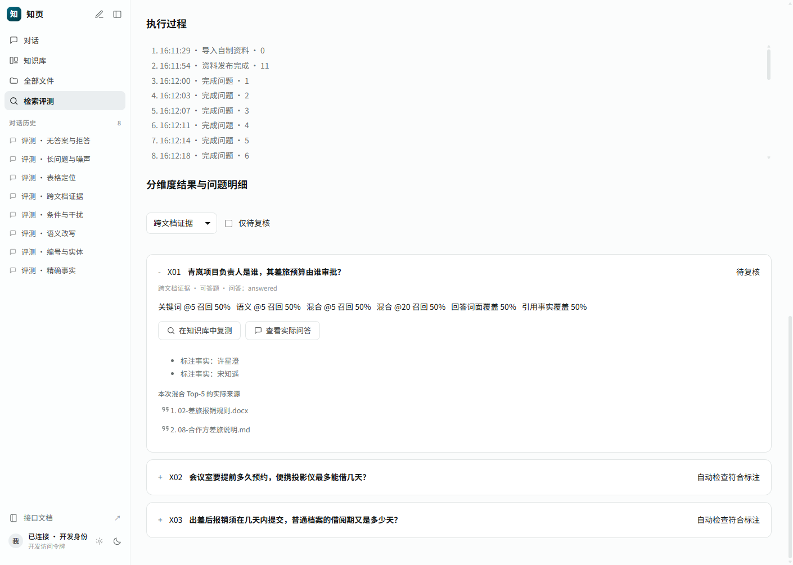
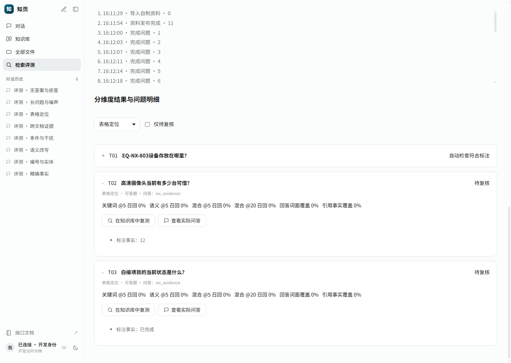
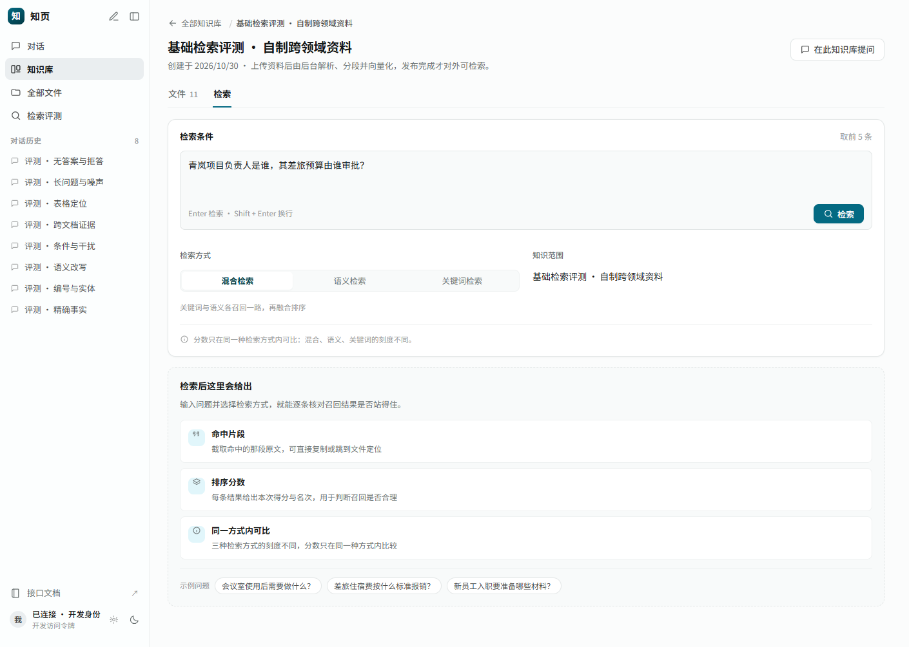

知识检索与问答助手
基础评测报告
本轮复现了语义改写、跨文档和表格定位三类问题。混合检索优于单路检索，但只增加返回条数没有改善失败用例；下一阶段应优先检查候选召回与阈值，而不是仅提高Top-K。
以上是本次小规模自制集的观测结果，不是答案正确率，也不能外推为真实业务资料的整体效果。
一、评测目标与实验条件
目标是建立可在前端回看的真实模型基线，判断失败位于召回、证据完整性还是问答阶段。本轮不修改检索算法，不为改善分数临时更改阈值，不引入甲方资料或网络抓取内容。
| 项目 | 本轮设置 |
|---|---|
| 资料 | 11份自制文件：8份主题资料、3份干扰资料；MD、TXT、CSV、DOCX、XLSX共5种格式。 |
| 内容范围 | 办公场地、差旅报销、信息安全、项目进度、设备库存、档案借阅、耗材管理、合作方差旅说明；人名、项目与规则均为虚构。 |
| 问题集 | 24题，8个维度，每维度3题。其中21题有标注事实，3题无答案。 |
| 模型 | 向量模型bge-m3；生成模型deepseek-flash。未固定或验证模型权重摘要/服务内部修订号。 |
| 检索设置 | 关键词相似度下限0.06；语义余弦距离上限0.42；RRF融合沿用当前实现。语义距离越小越相似，不将距离上限当成相似度下限。 |
| 实验组合 | 每题对比关键词Top-5、语义Top-5、混合Top-5、混合Top-20；问答固定使用混合Top-5。 |
| 执行边界 | 96次检索请求＋24次问答请求＝120次HTTP请求，单轮执行，无自动重跑。不是120次模型调用；入库与报告发布另有向量调用，token与费用未统计。 |
| 隔离 | 实验仅检索基础资料库。问题标注与结果放在独立报告库，不参与被测检索，防止答案泄漏。 |
二、指标口径：如何读懂结果
- 平均事实召回：先计算每题“找回的标注事实数 / 全部标注事实数”，再对21个可答题取平均。命中必须同时符合预期文档、发布build和支持片段。
- 完整证据覆盖：一题的全部标注事实均被召回才计入。跨文档问题只命中一半，不能算完整成功。
- MRR：首个被找回的标注事实的倒数排名，缺失记0；它不能证明多事实问题已完整回答。
- 回答词面完整：所有标注答案词或别名均出现在回答中。它不验证逻辑、条件约束或逐句语义正确性。
- 引用事实覆盖：标注事实是否存在于可解析、版本与定位一致的被引原文中。它不等于答案中的每句话都由引用蕴含。
- 正常拒答：无答案题返回
no_evidence。接口错误不算正常拒答；本轮检索和问答均未发生接口错误。
三、总体结果：混合有效，但增加Top-K无收益
| 检索方案 | 平均事实召回 | MRR | 完整证据覆盖 | 有效可答题 |
|---|---|---|---|---|
| 关键词Top-5 | 40.48% | 0.405 | 8 / 21 | 21 / 21 |
| 语义Top-5 | 73.81% | 0.690 | 15 / 21 | 21 / 21 |
| 混合Top-5 | 83.33% | 0.786 | 17 / 21 | 21 / 21 |
| 混合Top-20 | 83.33% | 0.786 | 17 / 21 | 21 / 21 |
混合Top-5较关键词提高约42.86个百分点，较语义提高约9.52个百分点（按未舍入指标计算）。Top-20结果与Top-5相同，本轮未观察到扩大返回数量的收益。失败问题的实际命中数为0或2，说明不是最终Top-5截断导致这些证据缺失；上游过滤和候选召回仍需进一步定位。

问答侧：21个可答题中18题返回answered、3题返回no_evidence；其中只有17题同时达到回答词面完整和标注引用事实完整。X01虽然返回answered，仍缺少半数标注事实。3个无答案题均正常拒答，未出现接口错误。
四、分维度结果：短板集中在哪里
| 维度 | 题数 | 混合Top-5完整覆盖 | 回答词面完整 | 主要观察 |
|---|---|---|---|---|
| 精确事实 | 3 | 3 / 3 | 3 / 3 | 本轮均覆盖。 |
| 编号与实体 | 3 | 3 / 3 | 3 / 3 | 本轮编号、实体匹配有效，不代表长编号与OCR变体均已验证。 |
| 语义改写 | 3 | 2 / 3 | 2 / 3 | “散会收尾”未召回会议室使用后事项。 |
| 条件与干扰 | 3 | 3 / 3 | 3 / 3 | 本轮未检测到预设的错误答案词；仍需人工语义核对。 |
| 跨文档证据 | 3 | 2 / 3 | 2 / 3 | 负责人＋预算审批人问题只获得审批人证据。 |
| 表格定位 | 3 | 1 / 3 | 1 / 3 | 按资产编号定位有效，设备数量及项目状态问题失败。 |
| 长问题与噪声 | 3 | 3 / 3 | 3 / 3 | 本轮有效；小语料与有限干扰不能代替大规模噪声测试。 |
| 无答案与拒答 | 3 | 不适用 | 不适用 | 3 / 3正常拒答。 |

五、失败用例与证据分析
5.1 跨文档：有回答，不等于问题回答完整
X01：“青岚项目负责人是谁，其差旅预算由谁审批？”标注需要两份资料：项目进度表中的“许星澄”，以及差旅规则中的“宋知遥”。混合检索只返回2个片段，来自差旅规则与合作方说明，没有项目进度表；事实召回、回答词面及引用事实覆盖均为50%。

5.2 表格：已入库，不等于能用自然语言找到
T02：“高清摄像头当前有多少台可借？”标注为12台。T03：“白榆项目的当前状态是什么？”标注为已完成。两题四种检索方案均返回0个命中，最终均为no_evidence。作为对照，按资产编号询问存放地点的T01成功。

5.3 语义改写：缺少字面重合时，两路均可能失效
S01：“散会离开场地之前，要做哪些收尾工作？”资料含“清理桌面、关闭投影仪、照明和空调”，但关键词、语义与两种混合配置均为0命中。该例表明当前向量检索没有完全弥补字面匹配的缺陷。
| 用例 | 预期来源关键词相似度 | 阈值 | 已验证事实 |
|---|---|---|---|
| S01 | 0 | 0.06 | 会议室来源被关键词阈值过滤。 |
| X01 | 项目表0.02256；差旅规则0.18605 | 0.06 | 关键词路保留差旅规则，过滤缺失的项目表。 |
| T02 | 0.04464 | 0.06 | 设备库存表被关键词阈值过滤。 |
| T03 | 0.01575 | 0.06 | 项目进度表被关键词阈值过滤。 |
以上相似度通过对当前自制库的只读SQL核验取得。关键词路的过滤已经证实；语义路为什么漏掉这些来源，尚未被完全定位。当前距离上限为0.42，但没有额外计算失败问题到目标片段的原始向量距离，因此不能断言“调整到某个阈值即可解决”。
六、工程验证与前端使用
后端完整检查303项通过，前端单元测试27项通过；静态、类型、迁移、HTTP链路和必要浏览器验收均通过。有1项既有Starlette/httpx弃用警告。工程验证通过不等于检索效果已达标。
- 左侧“检索评测”查看过程、四方案对比和分维度结果；可筛选“仅待复核”。
- 展开用例查看标注事实与实际命中来源；点击“查看实际问答”打开已存档会话及引用。
- 点击“在知识库中复测”进入该知识库的“检索”页签，预填原问题；不会自动追加模型请求。
- 报告页本身只读。截图复核只读取现有结果、会话和引用，未重新执行付费问答。

七、下一阶段建议与验收方式
| 优先级 | 工作 | 验证要求 |
|---|---|---|
| P1 | 改进中文关键词候选召回，重点核对短实体、编号、自然语言问题对长片段的匹配。 | 固定本轮资料与标注，先检验S01、X01、T02、T03，再检查其余题是否退化；不可仅为个例硬编码答案。 |
| P1 | 独立标定bge-m3的距离门槛，区分过滤损失与候选排序问题。 | 单变量对比；同时检查相关召回和无答案误召回，不把一味放宽阈值当改进。 |
| P2 | 检查表头、字段和值的检索表示，以及跨文档问题拆解。 | 完整覆盖全部子问题所需来源；保留原文坐标、授权及引用校验，不以普通Top-K冒充全量聚合。 |
| P2 | 召回稳定后再评估重排或问题理解组件。 | 复用成熟组件，另设有上限的实验；模型需要的上下文限定为授权资料，不自动读取或外发真实数据。 |